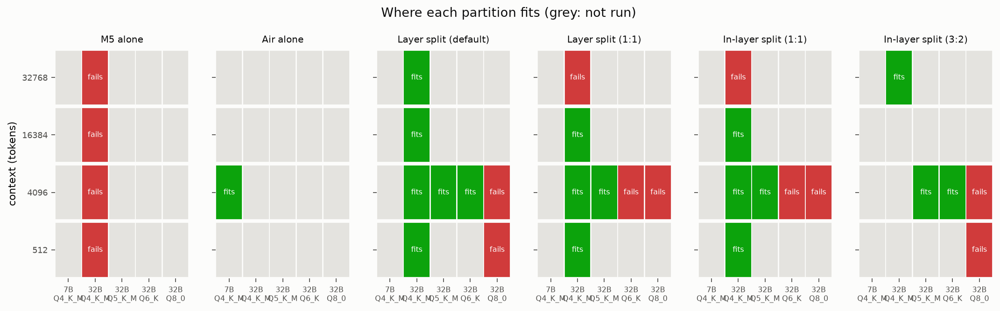
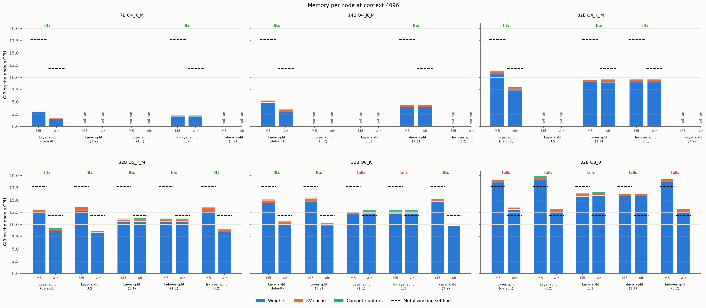
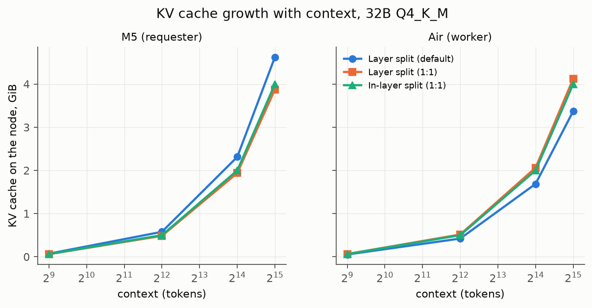
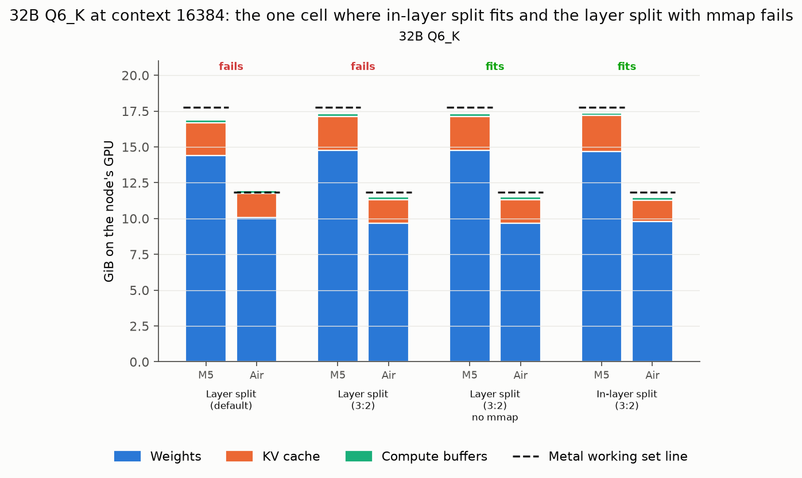

סיכום ניסויים, 7 עד 14 בנובמבר 2026. מענה למשימה מהפגישה ב-2.11: תוצאות, קשיים, מדידות וגרפים.
השאלה מהפגישה: מתי חלוקה לפי שכבות מספיקה, ומתי הזיכרון מכריח חלוקה בתוך שכבה? חילקנו אותה לשלוש שאלות מדידות:
| M5 | MacBook Air M3 | |
|---|---|---|
| זיכרון | 24 GB | 16 GB |
| תפקיד | מבקש (llama-server) | עובד (ggml-rpc-server) |
| קו העבודה של Metal, כפי שהמנוע מדווח | 17.76 GiB | 11.84 GiB |
1e7bcf3. רשת Wi-Fi ביתית, VPN
כבוי.-ts.| מודל | אורך הקשר | M5 לבד | Air לבד | לפי שכבות, ברירת מחדל | לפי שכבות, 3:2 | לפי שכבות, 1:1 | בתוך שכבה, 1:1 | בתוך שכבה, 3:2 |
|---|---|---|---|---|---|---|---|---|
| 7B Q4_K_M | 32768 | נכנס | נכנס | נכנס | נכנס | |||
| 14B Q4_K_M | 4096 | נכנס | נכנס | נכנס | נכנס | |||
| 14B Q4_K_M | 32768 | נכנס | לא | נכנס | נכנס | |||
| 32B Q4_K_M | 512 עד 16384 | לא | נכנס | נכנס | נכנס | |||
| 32B Q4_K_M | 32768 | לא | נכנס | נכנס | לא | לא | נכנס | |
| 32B Q5_K_M | 4096 | נכנס | נכנס | נכנס | נכנס | נכנס | ||
| 32B Q6_K | 4096 | נכנס | נכנס | לא | לא | נכנס | ||
| 32B Q6_K | 16384 | לא | נכנס בלי mmap (ראו למטה) | נכנס | ||||
| 32B Q6_K | 32768 | לא | ||||||
| 32B Q8_0 | 4096 (וב-512: שלוש חלוקות) | לא | לא | לא | לא | לא |
תא ריק = לא הורץ, כי התוצאה נקבעת מתא קטן יותר.



לא מצאנו מודל ואורך הקשר שבהם רק חלוקה בתוך שכבה עובדת.
היה תא אחד שנראה כך: 32B Q6_K ב-16384 טוקנים.
| חלוקה | ריצות שהצליחו | מקום פנוי ב-M5 | מקום פנוי ב-Air |
|---|---|---|---|
| לפי שכבות, ברירת מחדל | 0 מתוך 2 | 0.87 GiB | חסרים 0.10 GiB |
| לפי שכבות, 3:2, טעינה רגילה | 0 מתוך 3 | 0.44 GiB | 0.33 GiB |
| לפי שכבות, 3:2, בלי mmap | 2 מתוך 2 | 0.44 GiB | 0.33 GiB |
| בתוך שכבה, 3:2 | 3 מתוך 3 | 0.38 GiB | 0.36 GiB |

מה קרה:
--load-mode none, שמבטל את
המיפוי. אותם גדלי מאגרים בדיוק. הריצה הצליחה פעמיים, עם תשובות זהות
לחלוקה בתוך שכבה.המסקנה: את התא הזה קבע אופן הטעינה של המנוע, לא סוג החלוקה.
השלכה לקוד ההשמה: כשלמבקש נשאר פחות מבערך 2 GiB פנויים, להפעיל אותו
עם --load-mode none.
מגבלה: לא מדדנו כמה זיכרון המיפוי עולה. ידוע רק שהוא יותר מ-0.44 GiB ופחות מ-2.23 GiB בתנאים האלה.
סימונים:
C הוא הקו של מכונה. W המשקלים.
K מטמון KV. B מאגר החישוב.S = C_M5 + C_Air - (W + K + 2B).u = w_layer + k_layer. ב-32B זה 0.28 עד
0.51 GiB, לפי הדחיסה ואורך ההקשר.הכלל:
S < 0, שום חלוקה לא נכנסת. חסר זיכרון כולל.S >= u, חלוקה לפי שכבות נכנסת. חלון האפשרויות רחב
משכבה אחת, ולכן יש בו גבול שכבה.0 <= S < u, ייתכן שרק חלוקה בתוך שכבה נכנסת.
זה האזור היחיד שבו היא נחוצה מסיבת זיכרון.בדקנו את הכלל מול כל שילוב של מודל ואורך הקשר. הוא צדק בכולם. אף שילוב לא נפל באזור שבו נחוצה חלוקה בתוך שכבה. הקרוב ביותר: 32B Q6_K ב-16384 טוקנים, עם מרווח 0.77 GiB ושכבה של 0.45 GiB.
חשבון למודלים גדולים יותר (לא נמדד):
על שתי מכונות מהסוג שלנו, הזיכרון לא הכריח חלוקה בתוך שכבה עבור מודלים צפופים עד 32B. החלוקה בתוך שכבה היא כלי לחלוקה עדינה יותר. היא יכולה לעזור רק כשהמרווח קטן משכבה אחת. זה לא קרה. מה שקבע הצלחה או כישלון: סך הזיכרון, והתאמת היחס לגודל המכונות. יחס 1:1 על מכונה של 24 GB ומכונה של 16 GB נכשל בשתי שיטות החלוקה באותם תאים.
כל כישלון כאן הוא אחד משניים: חסר זיכרון כולל, או יחס שלא מתאים לגודל המכונות. אף כישלון לא נבע משכבה שגדולה ממכונה. לכן מכונה שלישית תעזור כשלב נוסף בחלוקה לפי שכבות, שמוסיף זיכרון. זוג שמחלק שכבה בתוכו שווה משהו רק אם שכבה אחת לא נכנסת למכונה. המודלים שבדקנו רחוקים מזה.
| קושי | מה קרה | מה תוקן |
|---|---|---|
| ה-Air נרדם | ב-8.11 ה-Air נכנס לשינה אחרי דקה בלי פעילות, באמצע הניסויים. 12 ריצות רצו בלי עובד | כלי ההרצה מונע שינה בשני המקים ובודק שה-Air עונה לפני כל ריצה. הריצות האלה הוצאו מהטבלה |
| הדיסק של ה-Air התמלא | העובד שומר במטמון על הדיסק כל משקל שהוא מקבל. המטמון הגיע ל-63 GB | כלי ההרצה מנקה את המטמון כשנשארים פחות מ-25 GB. זה משפיע רק על זמן הטעינה |
| מקום בדיסק להורדות | שלושת הקבצים של 32B תופסים 85 GB | הקובץ הגדול (Q8_0) נמחק מה-Air אחרי בדיקת התאמה. העובד לא קורא את הקובץ |
| מספר אחד לחלוקה בתוך שכבה | המנוע מדפיס שורת זיכרון אחת למבקש בלבד | חישבנו את חלק ה-Air לפי היחס. בדקנו פעם אחת מול כמות הנתונים שה-Air קיבל |
| כישלון שנראה כמו תוצאה | 3:2 לפי שכבות נכשל שלוש פעמים ב-32B Q6_K | ריצת בדיקה בלי mmap הראתה שהסיבה היא אופן הטעינה |
כל המזהים, התאים והמספרים נמצאים
ב-experiments/session5_memory_edge/EDGE_TABLE.md ובבלוק
"Session 5, memory edge, 2026-11" ב-experiments/RESULTS.md.
הניתוח המלא באנגלית:
experiments/session5_memory_edge/REPORT.md.
התאים שמכריעים:
BASELINE_local_qwen2.5-32b-q4km_m5_c512_r2BASELINE_local_qwen2.5-14b-q4km_air_c32768_r1A1_wifi_qwen2.5-32b-q4km_m5_c32768_r1 עד
_r3A1_wifi_qwen2.5-32b-q4km_m5_c32768bal_r1 עד
_r3,
B1_wifi_qwen2.5-32b-q4km_m5_c32768_r1A1_wifi_qwen2.5-32b-q6k_m5_c16384_r1, _r2,
A1_wifi_qwen2.5-32b-q6k_m5_c16384prop_r1 עד
_r3A1_wifi_qwen2.5-32b-q6k_m5_c16384propnommap_r1,
_r2B1_wifi_qwen2.5-32b-q6k_m5_c16384prop_r1 עד
_r3A1_wifi_qwen2.5-32b-q8_m5_c512_r1,
B1_wifi_qwen2.5-32b-q8_m5_c512prop_r1